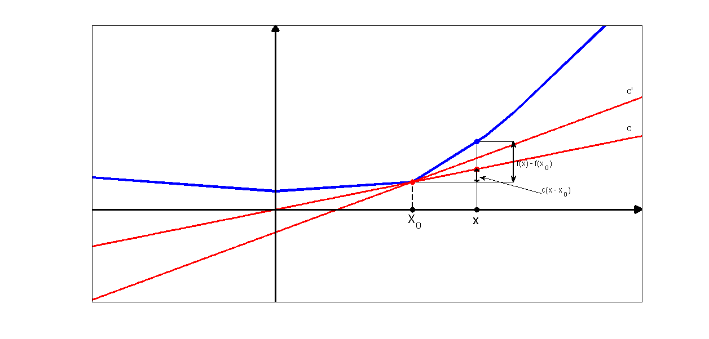

Illustration of some subderivatives of a function at point x0.
figure('Color',[1,1,1]);
blueX = [-1 , 0 , 0.75 , 1.15 ,1.3 , 1.8];
blueY = [0.35 , 0.2 , 0.3 , 0.8 ,1.05 , 2 ];
f1 = @(x) 0.4*x;
f2 = @(x) 0.7333*x - 0.25;
domain = -1:0.01:2;
hold all;
plot([1.1,1.1],[0,0.74],'-k');
plot([0.75,1.3],[0.3,0.3],'-k');
plot([1.1,1.3],[0.74,0.74],'-k');
plot(blueX,blueY,'-b','LineWidth',4);
plot(domain,f1(domain),'-r','LineWidth',3);
plot(domain,f2(domain),'-r','LineWidth',3);
plot([0.75,0.75],[0,0.3],'--k','LineWidth',2.5);
dotsize = {'MarkerSize',35};
plot(0.75,0.3,'.r',dotsize{:});
plot(0.75,0,'.k',dotsize{:});
plot(1.1,f1(1.1),'.r',dotsize{:});
plot(1.1,0,'.k',dotsize{:});
plot(1.1,0.74,'.b',dotsize{:});
axis([-1,2,-1,2]);
set(gca,'XTick',[],'YTick',[],'box','on')
annotation(gcf,'arrow',rel2absX([0,0]),rel2absY([-1,2]),'HeadWidth',12,...
'HeadStyle','plain',...
'LineWidth',3);
annotation(gcf,'arrow',rel2absX([-1,2]),rel2absY([0,0]),'HeadLength',12,...
'HeadWidth',12,...
'HeadStyle','plain',...
'LineWidth',3);
annotation(gcf,'textbox',[0.571 0.3232 0.04288 0.04878],...
'String',{'X_0'},...
'FontSize',20,...
'FitBoxToText','off',...
'LineStyle','none');
annotation(gcf,'textbox',[0.663 0.305 0.02902 0.06402],'String',{'X'},...
'FontWeight','bold',...
'FontSize',16,...
'FitBoxToText','off',...
'LineStyle','none');
annotation(gcf,'textarrow',[0.7635 0.677],[0.4299 0.478],...
'TextEdgeColor','none',...
'FontSize',14,...
'String',{'c(x - x_0)'});
annotation(gcf,'textbox',[0.725 0.482 0.1156 0.04878],...
'String',{'f(x) - f(x_0)'},...
'FontSize',14,...
'FitBoxToText','off',...
'LineStyle','none');
annotation(gcf,'textbox',[0.88 0.71 0.02902 0.04268],'String',{'c'''},...
'FontSize',16,...
'FitBoxToText','off',...
'LineStyle','none');
annotation(gcf,'textbox',[0.88 0.60 0.02902 0.04268],'String',{'c'},...
'FontSize',16,...
'FitBoxToText','off',...
'LineStyle','none');
annotation(gcf,'doublearrow',...
rel2absX([1.3,1.3]),...
rel2absY([0.3,0.74]),'LineWidth',2);
annotation(gcf,'doublearrow',...
rel2absX([1.1,1.1]),...
rel2absY([0.3,f1(1.1)]),'HeadLength',3,'LineWidth',2);
maximizeFigure();
printPmtkFigure('subgradient');
